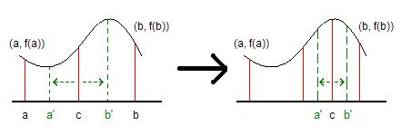

Optimization
程度★ 難度★★
Optimization
「最佳化」就是找到函數的最大值或者最小值。定義很簡單。
什麼時候需要最佳化？
電腦是計算機，只會計算數字。要讓電腦代替人腦處理真實世界的問題，首先要將人腦的抽象想法，一一對應到電腦的實際數值。
人腦考慮的「效果最好」與「效果最差」，放到了電腦就被設定成「數字最大」與「數字最小」。人腦考慮的「問題」與「各種可能性」，放到了電腦就被設定成「函數」與「各種輸出入」。
於是乎，人腦考慮的「最好結果」與「最差結果」，放到了電腦就是「最佳化」！
函數的極值
一維函數和二維函數容易作圖，三維函數就只能用空氣濃度來呈現函數值了，四維以上只能用幻想的。
以人類視覺感官來說，只要放眼一望就能看到最高點，可是電腦卻辦不到，只能一個一個位置判斷高度。
於是，每一種最佳化演算法除了必須找到極值，另外還有一個重要的共同議題得解決：如何避免卡在區域極值。於是各種奇妙的最佳化演算法就紛至沓來了。
最佳化演算法
百家爭鳴、各有所長。耍嘴皮子的成分居多。
儘管這些演算法不保證答案正確，然而在沒有其他更好的選擇之下，不失為一種解決方案。
http://en.wikipedia.org/wiki/Mathematical_optimization#Optimization_algorithms
http://en.wikipedia.org/wiki/Metaheuristic#Main_contributions
地面勘查類型
程度★ 難度★★
概論
選一個起點，一步一腳印，走向極值。
適用於函數值如同地表般連續起伏的時候。
Hill Climbing（登山法）
沿著函數圖形的表面前進。嘗試隨便跨出一步，確定是往上，就直直走；確定是往下，就不走，並轉向。最後成功登頂。
ICPC 5102
Simulated Annealing（模擬退火法）
登山法加強版。允許往下走，留個退路，避免走錯山頭。
嘗試隨便跨出一步，確定是往上，就走；確定是往下，以機率exp(-Δt/T)決定走或不走，其中Δt是前後高度差，T是時間。大致上來說，往下越陡就越不想走，年紀越大就越不想走。
註：原論文是找山谷而非找山峰。
Tabu Search（禁忌搜尋）
把剛剛經過的地方用記憶體記下來，避免鬼打牆。
實作時，記住前k步，以queue紀錄。
Gradient Descent（梯度下降法）
計算當前位置的傾斜程度，沿著最陡的方向前進。
求得傾斜程度的方式，是對函數進行一次微分，代入當前位置就得到斜率。因此這個方法只能用在可微函數。
註：原論文是找山谷而非找山峰。
Newton's Method（牛頓法）
計算當前位置的傾斜程度，沿著最陡的方向前進。
求得傾斜程度的方式，是對函數進行二次微分，換句話說就是計算Hessians Matrix。因此這個方法只能用在可微函數。
使用二次微分，可以避免卡在鞍點。
空中勘查類型
程度★ 難度★★
概論
像偵察機一樣飛來飛去，不會被高山峽谷阻擋。
Particle Swarm Optimization（粒子演算法）
一、散佈N個粒子。一個粒子對應一個可行解。 position[1...N]; // x solution[1...N]; // f(x) 二、以個人過去最佳解、團體過去最佳解，決定粒子的速度。 然後移動粒子，讓粒子飛往最佳解。 velocity[i] = 2.0 * rand(0 ~ 1) * (best_position[i] - position[i]) + 2.0 * rand(0 ~ 1) * (best_position[best_particle_index] - position[i]); 三、更新個人最佳解、團體最佳解。 best_solution[i] = max(best_solution[i], solution[i]) and record best_position[i]; best_particle_solution = max_arg(best_solution[1...N]) and record best_particle_index; 四、重複二三，直到解夠好。
Bee Colony Optimization（蜜蜂演算法）
一、散佈N個食物。一個食物對應一個可行解。 position[1...N]; // x solution[1...N]; // f(x) 二、N隻蜜蜂分頭前往N個食物並返回，但是腦中記得的位置會有偏差。 position[i] += rand(-1 ~ +1) * position[rand(1 ~ N expect i)]; 三、每隻蜜蜂皆從N個食物中挑一個去，機率由解的好壞決定。 probability[i] = solution[i] / ( solution[1] + ... + solution[N] ) 返回時腦中記得的位置一樣會有偏差。公式同二。 四、如果某個食物連續K個回合沒去，食物自動消滅。 隨機散佈食物，補足食物直到N個。 五、重複二三四，直到解夠好。
劃分區域類型
程度★ 難度★★
概論
像包圍網一樣把範圍逐漸縮小。
Branch and Bound（分支定界法）
先把一段數據區間分成幾段較小的區間。如果有一段區間，我們當下看不出它是不是正確區間，就把該區間分得更細，並遞迴下去，釐清細節；如果能看出，就停止遞迴。
branch是指當一段區間不確定界限，就分割區間，並遞迴下去。bound是指當一段區間確定了界限，並停止遞迴。
Linear Programming（線性規劃）
線性規劃用於線性函數，並且有許多限制條件時。可以寫成聯立線性不等式。
多半用於圖論問題，效果相當好。針對不同問題，有著各種加速技巧。
由於內容繁雜，此處省略之，各位讀者可自行蒐集資料閱讀。
UVa 10498
排列組合類型
程度★ 難度★★
概論
已經沒有地圖的概念。拼湊函數輸入，盡量讓輸出函數值是極值。
Genetic Algorithm（基因演算法）
這是一個隨機亂湊答案的方法，靈感來自於染色體減數分裂的過程，優良的基因會不斷遺傳下去，逐代演化出更適應環境的基因。基因演算法把答案比擬成染色體，把好的答案不斷分裂再結合，成為更好的答案。
1. [初始化] 一開始先隨便弄幾組答案。 1010101010 1011001011 1110101011 0010101000 2. [fitness function] 根據問題特性，定義答案的好壞程度。 f(1010101010) = 678 3. [selection] 隨便找個位置切一刀，各組答案都被分成兩段。 1010101 010 1011001 011 1110101 011 0010101 000 4. [crossover] 隨便找兩組你覺得夠優良的答案，交叉相接變成新答案。不優良的答案就不交叉相接。 重複一直做到答案數目跟原先一樣多。 1010101 \/ 010 -> 1010101 -- 011 1011001 /\ 011 1011001 -- 010 1010101011 1011001010 1110101010 1010101000 5. [mutation] 每組答案都隨便找一個地方把數字改掉，也可以不改。 1010111011 1011001000 1110101010 1010101001 6. 重複3. 4. 5.，直到裡面有一組答案是你滿意的。
1. 隨機產生N組答案。 2. 計算fitness function。 3. 重複以下步驟，直到有一組答案讓人滿意。 甲、selection。 乙、crossover。 丙、mutation。（如果一開始的答案種類足夠豐富，則可以省略不做） 丁、計算fitness function。
演算法的大致過程就是如此，細部的實作方式、參數的調校方式則是隨人話虎爛。只要一開始的答案種類足夠豐富，多演化幾次，就可以得到不錯的結果。
一開始的答案種類足夠豐富，則可以避免進入區域極值。mutation可以增加答案豐富性，跳脫區域極值。
範例：0/1 Knapsack Problem
有N個物品。 [初始化] 答案設計成N個二進位數字， 0代表對應的物品不在背包內， 1代表對應的物品在背包內。 [fitness function] 是背包內物品總價值，數值越大越好。
當「特定組合」具有深邃的影響力，造成最佳解、次佳解們都包含著同一（幾）套「特定組合」，此時就適合使用基因演算法。以0/1背包問題為例，一套好的物品組合方式可以有效節省背包空間，只要依賴幾套好的物品組合方式，就留有足夠的背包空間，能夠隨心所欲的放入其他物品；所有接近最佳解的答案，答案的其中一小段，都會是那幾套固定的物品組合方式──這種情況就非常適合使用基因演算法。
UVa 10715
範例：Minimum Spanning Tree
有E條邊。 [初始化] 答案設計成E個二進位數字， 0代表對應的邊不是MST。 1代表對應的邊是MST。 [fitness function] 是MST的權重，數值越大越好。
用人眼觀察，很直覺的就能在小區域找出最佳的子樹，那便是一套「特定組合」。
範例：Travelling Salesman Problem
有N個城市。 [初始化] 答案被迫設計成0到N-1的數字，代表一條路徑。 [fitness function] 是路徑的權重，數值越小越好。 [crossover] 哈哈哈，很難搞。 [mutation] 可以有好幾種方式： 1. 隨便交換兩個數字。 2. 隨便找一段數字，顛倒前後順序。 3. 隨便拿出一個數字，隨便插入到其他地方。
旅行推銷員問題也具有「特定組合」的性質，只不過它的答案並不適合分裂再結合，最好不要堅持使用基因演算法，自尋煩惱。
Ant Colony Optimization（螞蟻演算法）
這是一個隨機亂湊答案的方法，靈感來自於螞蟻覓食的過程，螞蟻發現食物後會沿途留下強烈的費洛蒙，驅使其他螞蟻沿著路線前進，不斷留下更多費洛蒙，吸引更多螞蟻；也有螞蟻會另闢新路，而找到更簡潔的路線。螞蟻演算法把答案比擬成螞蟻覓食的路徑，把好的答案不斷做局部調整，成為更好的答案。
螞蟻演算法有各式各樣的版本，這裡介紹其中一個經典版本Ant Colony System，主要是計算一條最短的覓食路徑。附帶一提，這與螞蟻的真實行為有很大出入。
1. [初始化] 一開始先建立一個地圖，地圖上有P個地點。 有一些地點是食物，有一個地點是蟻窩。 地點與地點間皆有道路， 所有道路的費洛蒙都預設為1.0。 2. [state transition rule] 一隻螞蟻從蟻窩出發。 每次踏上一個地點，螞蟻有兩種選擇， ◎探索：隨便走一條路。機率為q。 ◎追蹤：走費洛蒙最強的道路。機率為1-q。 q是螞蟻選擇探索的機率，自行設定在0到1之間。 為了不讓螞蟻打轉繞圈，所以會讓螞蟻避開去過的地點。 在探索和追蹤前，要先過濾掉去過的地點。 所有食物都找到後就直接回蟻窩， 沒找到所有食物就不准回蟻窩。 總之就是要刻意弄出一條「嘗遍天下美食」的路線。 3. [local updating rule] 螞蟻回巢之後， 剛剛走過的每一條道路，費洛蒙都會加強， 道路的費洛蒙會變成下列兩者相加後的數值， ◎自然蒸發，餘下：原本費洛蒙值，乘上1-ρ。 ◎螞蟻路過，添加：道路起點所連接的道路當中，最大的那個費洛蒙值，乘上p。 ρ是費洛蒙蒸發的程度，自行設定在0到1之間。 通常會把參數設的很好，讓相加之後，費洛蒙會比原本增加一些，而不是變更少。 4. 有N隻螞蟻，依序做2. 3.這件事。 5. [global updating rule] N隻螞蟻回巢之後， 地圖上所有道路的費洛蒙都會蒸發一定比例。 ◎自然蒸發，餘下：原本費洛蒙值，乘上1-α。 而目前的最佳路線，在蒸發之後，竟會神奇地額外增加一些費洛蒙。 ◎最佳路線，添加：目前最佳解的數值，倒數後，再乘上α。 α是費洛蒙蒸發的程度，自行設定在0到1之間。 6. 2. 3. 4. 5.，重複執行R次。 途中不斷紀錄最好的路線。
1. 初始化地圖與費洛蒙。 2. 以下動作執行R次： 1. N隻螞蟻依序找路線，不是同時找路線： 1. state transition rule，一隻螞蟻找一條路線。 此路線是由蟻窩出發，經過所有食物各一次，然後回到蟻窩。 2. 記錄目前最佳路線。 3. local updating rule，更新路線費洛蒙。 2. global updating rule，更新所有道路費洛蒙。
螞蟻數量足夠豐富，則可以避免進入區域極值。隨機探索可以增加答案豐富性，跳脫區域極值。
Flash小遊戲：http://www.newgrounds.com/portal/view/378646。這個遊戲的螞蟻演算法會讓螞蟻不斷繞圈，各位可以利用這項弱點來攻略遊戲。
範例：Travelling Salesman Problem
有N個城市。 [初始化] 答案設計成0到N-1的數字，代表一條路徑。 地圖上每個地點都有食物。 地圖上可以任意挑一地點作為蟻窩。
當答案具有「特定排列」的性質，就適合採用螞蟻演算法。
特殊函數類型（Under Construction!）
程度★ 難度★★
求連續函數的極值
運用Bisection Method的概念，也可以求連續函數的極值——最大值、最小值。由於最大值和最小值無法使用夾擠的方式求得，在這裡必須換個想法。
求連續函數的最大值： 1. 先求得區段 [a,b] 的中間點 c。 2. 以 c 為中心點，向左右拓展成 a' 和 b'。 拓展的距離是 [a,b] 的一半再一半，等同於 [a,c] 的一半，也等同於 [c,b] 的一半。 3. 判斷 f(a')、f(b')、f(c) 三者當中何者最大，並將 c 移動到最大的那邊去。 （如果 f(c) 是最大的，則不必移動） 4. 循環的做下去，逐次把拓展距離減半即可。
如果函數有許多區域極大值或區域極小值時，則可以細切整段函數，然後各區段分別做一次Bisection Method，整合之後就可以求出整體的最大值或最小值。粗略的程式碼如下所示：
UVa 10228
Ternary Search
UVa 10385 11243 11562 11613
Interpolation Search